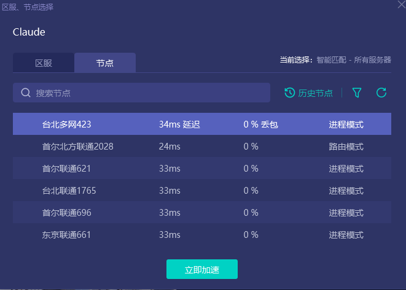
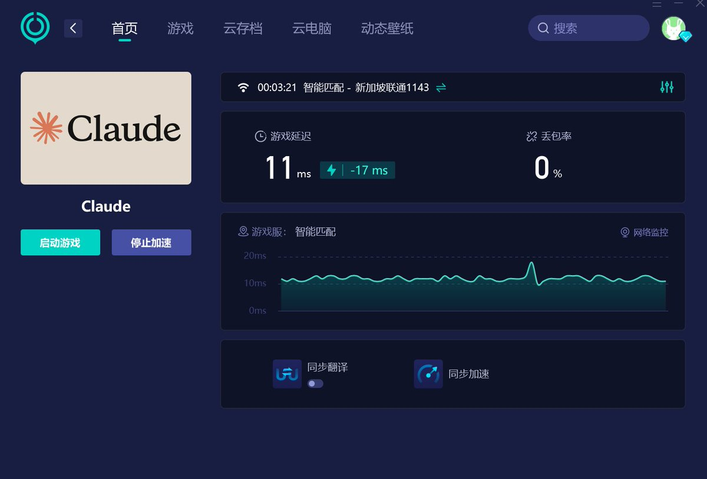
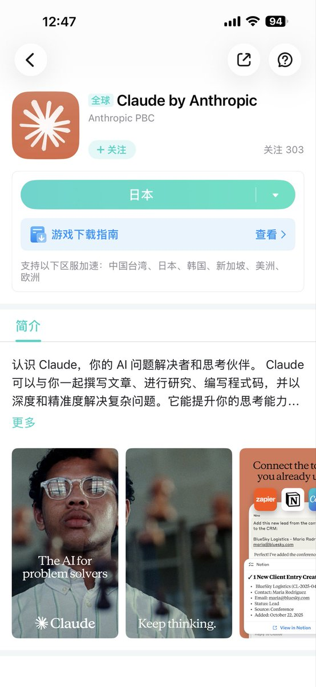

@maigomaigoHH 《游戏下载指南》




网瘾戒不掉，刚刚又在Claude氪了个20x Max豪华大礼包
可惜最近那些VPN机场非常不稳定，非常影响游戏体验，不过好在有网易UU的专线加持，这下爽飞了
第一次见「Anthropic」这样菜就封号还主动退款的良心游戏公司，请让我再练练，争取不封号！
求求A社不要再给我退款了，我不是未成年😭😭😭 https://t.co/mBnetaVZLw
可惜最近那些VPN机场非常不稳定，非常影响游戏体验，不过好在有网易UU的专线加持，这下爽飞了
第一次见「Anthropic」这样菜就封号还主动退款的良心游戏公司，请让我再练练，争取不封号！
求求A社不要再给我退款了，我不是未成年😭😭😭 https://t.co/mBnetaVZLw